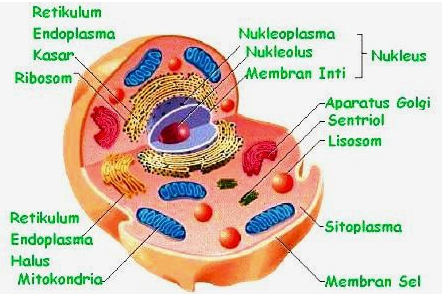

- Home
- PJOK
- Informatika
- Biologi
- Inggris
-
Sejarah

Sel Hewan
Sel hewan adalah unit fungsional dasar yang membangun tubuh hewan. Struktur sel hewan dibagi menjadi 15
Membran Sel
Membran sel adalah membran semipermeabel pada sebuah sel yang mengelilingi dan membungkus isi sitoplasma dan nukleoplasma. Membran sel memisahkan sel dari cairan interstitial (komponen utama dari cairan ekstraseluler) di sekitarnya. Pembentukan membran sel dilakukan dengan bahan dasar berupa lipoprotein yang dibentuk oleh lemak dan protein. Membran ini terdiri atas lipida dwilapis, termasuk kolesterol (komponen lipid) yang berada di antara fosfolipid untuk mempertahankan fluiditasnya pada berbagai suhu.
Sitoplasma
Sitoplasma adalah bagian sel yang terbungkus membran plasma. Sitoplasma terdiri dari air, protein, karbohidrat, lemak, mineral, dan vitamin. Sitoplasma berfungsi sebagai tempat penyimpanan bahan kimia sel yang penting bagi metabolisme sel, seperti enzim-enzim, ion-ion, gula, lemak dan protein. Pada sel eukariota, sitoplasma adalah bagian non-nukleus dari protoplasma. Pada sitoplasma terdapat sitoskeleton, berbagai organel dan vesikuli, serta sitosol yang berupa cairan tempat organel melayang-layang di dalamnya.
Retikulum Endoplasma
Berikutnya adalah retikulum endoplasma yang merupakan organel berbentuk benang-benang pada bagian inti sel. Retikulum endoplasma adalah organel yang dapat ditemukan pada semua sel eukariotik. Retikulum endoplasma merupakan bagian dari sistem endomembran. Retikulum endoplasma merupakan labirin membran yang demikian banyak sehingga RE ini meliputi separuh lebih dari total membran dalam sel-sel eukariotik.
Mitokondria
Bagian dari sel hewan berikutnya adalah mitokondria yang merupakan organel terbesar sebagai mesin dalam sel. Organel ini memiliki dua bagian lapis membran berlekuk yang disebut dengan istilah kritas. Di dalam mitokondria, glukosa dan oksigen saling bekerja sama untuk membentuk energi yang dibutuhkan.
Lisosom
Lisosom merupakan kantong terikat pada membran berisi kandungan enzim hidrolitik. Lisosom terletak pada sel eukariotik, bagian ini berguna untuk mengontrol pencernaan intraseluler dalam kondisi apapun. Lisosom berfungsi untuk mengontrol pencernaan intraseluler, mencerna materi menggunakan fagositosis, menghancurkan organel sel yang telah rusak, dan memasukkan makro molekul dari luar menuju ke dalam sel melalui mekanisme endositosis.
Peroksisom
Peroksisom atau dikenal juga sebagai badan mikro merupakan organel berkantong kecil berisi enzim katalase. Fungsinya untuk menguraikan peroksida (H2O2) atau metabolisme yang bersifat racun dan mengubah lemak menjadi karbohidrat. Organel peroksisom ini bisa ditemukan pada bagian sel hati dan juga ginjal.
Ribosom
Ribosom adalah organel sel yang memiliki tekstur padat dengan ukuran kecil, yaitu diameter sekitar 20 nm. Organel ini terdiri dari 65% RNA ribosom dan 35% protein ribosom atau ribonukleoprotein. Ribosom pada sel hewan menerjemahkan RNA untuk membentuk rantai polipeptida atau protein dengan menggunakan asam amino saat proses translasi. Ribosom terikat pada retikulum endoplasma kasar atau membran inti sel yang berfungsi sebagai tempat berlangsungnya proses sintesis protein.
Sentriol
Sentriol merupakan struktur organel yang berbentuk tabung pada sel eukariota. Organel ini berperan penting dalam proses pembelahan sel dengan membentuk benang spindel dan pembentukan silia, serta flagela. Bukan hanya itu, sepasang sentriol juga dapat membentuk suatu struktur gabungan yang disebut dengan sentrosom.
Badan Golgi
Badan golgi atau juga dikenal dengan sebutan aparatus golgi merupakan organel yang berkaitan dengan fungsi ekskresi sel hewan. Posisinya tepat berada pada sel eukariotik yang berperan dalam proses ekskresi, seperti ginjal. Bentuknya seperti kantong pipih dengan ukuran bervariasi dan terikat oleh membran. Setiap sel hewan memiliki sekitar 10-20 badan golgi.
Nukleus
Nukleus adalah organel terkecil yang mengatur sekaligus mengendalikan aktivitas sel hewan. Proses ini dimulai dari metabolisme sampai pembelahan sel. Nukleus mengandung materi genetik yang berbentuk DNA linear panjang membentuk kromosom. Organel ini bisa ditemukan pada sel eukariotik yang terdiri dari beberapa bagian, seperti membran inti, nukleoplasma, kromosom, dan nukleus.
Nukleolus